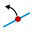

Les icônes utilisées ci-dessous se trouvent dans la première rangée d'icônes de la barre d'outils de gauche (relative aux points).
Un point lié est un point qui a été lié à un objet. On peut le déplacer mais à condition qu'il reste sur l'objet.
Transformation d'un point lié en point libre :

La liaison entre un point et un objet peut être supprimée à l'aide de l'icône  .
.
Transformation d'un point libre en point lié :
Il faut d'abord cliquer sur le point libre que l'on veut transformer en point lié puis sur l'objet auquel on veut le lier. La liaison peut être impossible si l'objet auquel on veut lier le point libre dépend de celui-ci.
Les icônes utilisées ci-dessous se trouvent dans la quatrième rangée d'icônes de la barre d'outils de gauche à partir du bas (relative aux affichages).
Les commentaires, affichages de valeurs, affichages LaTeX, les macros peuvent être liés à un point.
Transformation d'un affichage lié en affichage libre.
La liaison entre un affichage et un objet peut être supprimée à l'aide de l'icône  .
.
Transformation d'un affichage libre en affichage lié.
On peut transformer un affichage libre en affichage lié à l'aide de l'icône . Il faut d'abord cliquer sur l'affichage libre que l'on veut transformer en affichage lié puis sur le point auquel on veut le lier.